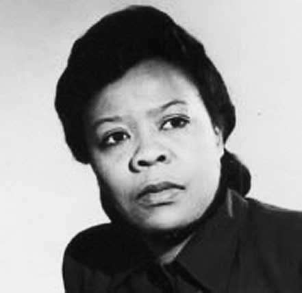

Biography
Marie Van Brittan Brown was an American Inventor. Her greatest invention was the home security system, which she created with the help of her husband. It is a closed-circuit television system used for home monitoring. This security system was the forerunner of all advanced home security technology in use today so her invention made a very big impact on the things we use today. She was born 1922 in Jamaica, Queens and died in 1999. Her first occupation was not an inventor, she first became a nurse and did not work regular hours so she would have more time to spend with her husband. Albert Brown, Marie's husband, was an electronics technician. Working together they two devised a home security system.